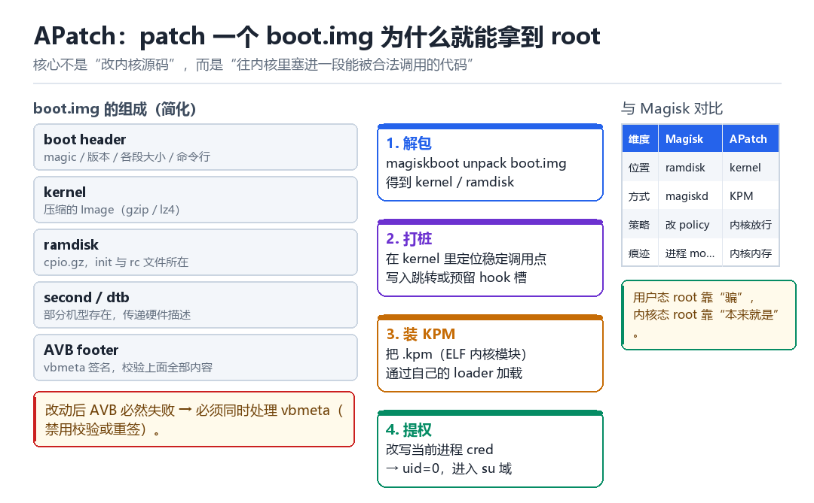

APatch 的 root 原理
从 boot.img patch 开始
先搞清一件事：为什么“改一个镜像文件”就能换来 uid=0。
1.1 从“我是谁”开始：uid 到底存在哪
Android 的权限模型本质上很简单：内核里每个进程都挂着一个 cred 结构，里面写着 uid、gid、能力集。系统里所有“你能不能干这件事”的判断，最后都要回到这个结构上。所以“拿到 root”这句话翻译成内核语言，就是一句话：让某个进程的 cred 里，uid 变成 0。
剩下的所有技术，都是围绕“怎么合法地改到那个字段”展开的。用户态方案要在内核的规则里找缝隙；内核态方案则干脆把自己变成规则的一部分。APatch 属于后者。
1.2 boot.img 是什么
boot.img 是一个容器，里面按顺序装着几样东西：boot header（描述各段位置与大小）、kernel（压缩过的内核镜像）、ramdisk（一个 cpio 归档，init 与一堆 .rc 文件都在里面）、部分机型还有 second 或 dtb，最后是 AVB footer（40 字节，记录原镜像大小与 vbmeta 的位置，本身不带摘要签名）。
| 组成 | 内容 | 被谁使用 |
|---|---|---|
| boot header | magic、版本、各段偏移与大小、命令行 | bootloader |
| kernel | 压缩的 Image（gzip / lz4 / zstd） | kernel 自身解压 |
| ramdisk | cpio.gz，init、init.rc、sepolicy 等 | init |
| second / dtb | 第二阶段引导、硬件描述 | bootloader / kernel |
| AVB footer | 指向 vbmeta 的偏移与大小（本身只有 40 字节，不含摘要） | bootloader 校验 |
关键点在于：内核启动参数、init 的行为、以及一部分安全策略，都在这个文件里。改它，等于改了整个系统启动时的“出厂设置”。
1.3 传统 Magisk 的思路：动 ramdisk
Magisk 选择动 ramdisk：把 magiskinit 塞进去，让它抢在真正的 init 之前跑，做几件事——挂载模块目录、用 mount 覆盖替换系统文件、启动 magiskd 守护进程、并 patch SELinux 策略让 su 能工作。
这条路的优点是成熟、生态完整；缺点是痕迹相对多：多出来的进程、mount 记录、被覆盖的文件在 mountinfo 里都能看到，于是隐藏就变成了一场“和检测方比拼谁更细心”的持久战。
1.4 APatch 的思路：动 kernel
APatch 把改动点下移了一层：不在 ramdisk 里做文章，而是往内核里塞进一段能被调用的代码。它引入了 KPM（Kernel Patch Module）这个概念——一种自带的、轻量的内核模块，由用户态的 loader 加载进内核并执行。

- 解包：把 boot.img 拆成 kernel 与 ramdisk，取出原始内核镜像。
- 打桩：在内核里定位一个稳定的调用点，写入跳转，或者预留一个 hook 槽位。
- 装模块：把编译好的 .kpm 通过自己的 loader 加载进内核内存，完成重定位与符号绑定。
- 提权：模块代码运行在内核态（EL1），直接改写目标进程的 cred，uid 变 0。
1.5 为什么“内核态”这件事这么关键
因为内核态不需要“请求许可”，它就是许可本身。用户态的一切伪装——改名、改路径、改返回值——都要经过内核这一层；而如果改动发生在内核里，那么所有来查询的人，看到的都是“内核说的事实”。
用户态 root 靠“骗”，内核态 root 靠“本来就是”。
1.6 代价：AVB 与三绿
改 boot.img 会破坏 AVB 校验：bootloader 会算哈希、对 vbmeta 验签，对不上就拒绝启动或给出警告。所以 patch 完必须同时处理 vbmeta——要么关掉校验（在 fastboot 侧用 fastboot --disable-verity --disable-verification flash vbmeta vbmeta.img 重刷 vbmeta），要么重新签名（需要自己的密钥，且要改 bootloader 的信任根）。
这就直接牵出了第 03 章的主题：一旦 boot 状态被标记为“已解锁 / 未验证”，Google 的 Play Integrity 就从 STRONG 掉到 BASIC。想让三绿同时亮，就必须在证明链上做文章，而不只是在内核里。
| 维度 | Magisk | APatch |
|---|---|---|
| 改动位置 | ramdisk | kernel |
| 实现形态 | magiskd 守护进程 + mount | KPM 内核模块 |
| SELinux | patch policy 文件 | 内核态直接放行 |
| 主要痕迹 | 进程、mount、文件覆盖 | 内核内存、符号、模块链表 |
| 对 AVB 的影响 | 需处理 vbmeta | 需处理 vbmeta |
1.7 本章自测
- 不看资料，画出 boot.img 的五段结构，并说明每段被谁使用。
- 用一句话解释“为什么改 kernel 比改 ramdisk 更隐蔽”。
- AVB 校验失败会发生什么？有哪两种处理方式？
- 如果目标设备的三绿要求 STRONG，单靠 APatch 能解决吗？为什么？
1.8 深入：patch 到底改了哪几个字节
很多人第一次拆开 patched boot.img 时会失望：改了的地方往往只有几十个字节，甚至只是 header 里的几个标志位。因为真正的“载荷”不在 kernel 里，而是在 ramdisk 或另外的数据分区里；kernel 侧只留一个“接应点”。
| 改动位置 | 典型内容 | 作用 |
|---|---|---|
| kernel 中的空槽 | 跳转到 loader 的短跳转 | 入口 |
| kernel 尾部 padding | 打包的 KPM 镜像 | 载荷 |
| header cmdline | 追加参数 | 传参 |
| ramdisk 中的 rc | 新增 service 定义 | 拉起守护 |
理解这一点，对“为什么不同机型 patch 方式不一样”就不再困惑了：不同内核版本里可用的“空槽”位置、padding 大小、以及对镜像压缩格式的支持都不一样。
1.9 实战步骤：一次完整的 patch 流程
- 取镜像：从官方固件包或设备分区里取出
boot.img（dd if=/dev/block/by-name/boot）。 - 解包：用
magiskboot unpack拆出 kernel 与 ramdisk，确认内核版本与压缩格式。 - 打桩：定位可用的调用点或 padding，写入跳转与载荷，记录原始字节以便回滚。
- 重打包：
magiskboot repack生成新镜像，记录新旧哈希。 - 刷入并验证：
fastboot flash boot，重启后确认uid=0可用，同时记录 AVB 状态。 - 准备回滚：保留原始镜像与一键刷回脚本。
adb shell su -c 'dd if=/dev/block/by-name/boot of=/sdcard/boot.img'
adb pull /sdcard/boot.img
magiskboot unpack boot.img
magiskboot repack boot.img new-boot.img
fastboot flash boot new-boot.img
fastboot reboot1.10 常见坑
- A/B 分区：现代设备有两套 boot 槽位，刷错槽位表现为“刷了没反应”。用
fastboot getvar current-slot确认。 - vendor_boot：部分机型把 ramdisk 拆到
vendor_boot里，只刷 boot 不够。 - 动态分区：
super分区里的逻辑分区不能直接 dd，要用fastbootd或lpmake处理。 - 加密与 verity：
dm-verity开启时，改过的系统分区会导致启动失败，需要同时处理 fstab。
1.11 原理推演：从“能改镜像”到“能执行代码”
这里有一条容易被跳过的逻辑链，值得单独推一遍：改镜像只是“把字节写进去”，而“字节被执行”需要三个条件同时成立——它必须在可执行的内存里、必须有人把控制权交给它、它的执行必须不破坏系统既定假设。
| 条件 | 不满足的后果 | 怎么满足 |
|---|---|---|
| 在可执行内存里 | 写入的字节永远不会被取指 | 放进 kernel 的 text 段或由 loader 分配 |
| 有人转移控制权 | 代码存在但永不运行 | hook 一个必然被调用的函数 |
| 不破坏系统假设 | 运行后立刻崩溃 | 保存/恢复现场，遵守 ABI |
APatch 的“打桩”本质上就是在解决第二个条件：它找到了一个“系统必然会走到”的位置，在那里留下一个跳转。至于第一个条件，kernel 的 text 段本身就是可执行的，所以最省事的做法就是“把载荷塞进 kernel 自己的映射里”。
这也解释了为什么“改 ramdisk”和“改 kernel”在能力上差别这么大：ramdisk 的东西运行在用户态，受 SELinux 与 capability 的全部约束；而 kernel 里的东西运行在 EL1，约束少了一个数量级。
1.12 数据细节：一次 patch 之后，设备上多了什么
把“新装了一台设备”和“patch 过的设备”放在一起做 diff，能看到的东西比想象中多：
| 观测面 | 干净设备 | patch 后 |
|---|---|---|
| /proc/modules | 若干厂商模块 | 通常无变化（KPM 不进这里） |
| 内核 text 段 | 与官方镜像一致 | 多出一段跳转 |
| dmesg | 标准启动日志 | 可能多出 loader 的打印 |
| mountinfo | 标准挂载 | 通常无变化 |
| 进程列表 | 标准服务 | 可能有 su 守护 |
这张表的用处是：它告诉你“哪些面本来就不会变”，于是那些变了的面就成了高价值线索。做检测时，优先查“本该稳定却变了”的地方，比遍历所有特征高效得多。
1.13 工程权衡：为什么不直接改 syscall 表
新手常问：既然都在内核里了，为什么不直接把 open 的 syscall 换掉？答案有三层。
- 性能：syscall 是所有进程的高频路径，换掉它意味着每次调用都要多走一层。
- 风险：一旦实现有 bug，整个系统立刻不可用（连 shell 都起不来）。
- 暴露：syscall 表是最经典的检测点，几乎所有内核完整性检查都会比对它。